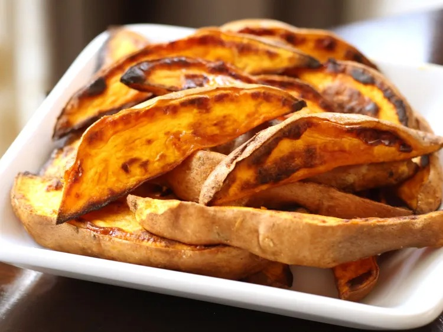

Home Page
Sweet Potato Stix

Description: This recipe will instruct you on how to make crispy, yummy sweet potato fries.
Ingredients:
- 1 tablespoon of Olive Oil
- Half a teaspoon of Paprika
- 8 sweet potatoes, sliced lengthwise into quarters
Steps
- Preheat oven to 400 degrees Fahrenheit, or 200 degrees Celsius
- Mix olive oil and paprika in a large bowl.
- Add potato sticks and stir by hand.
- Place on the prepared baking sheet.
- Bake for 40 minutes.
Voila ! Sweet Potato Stix
Recipe originally found Here